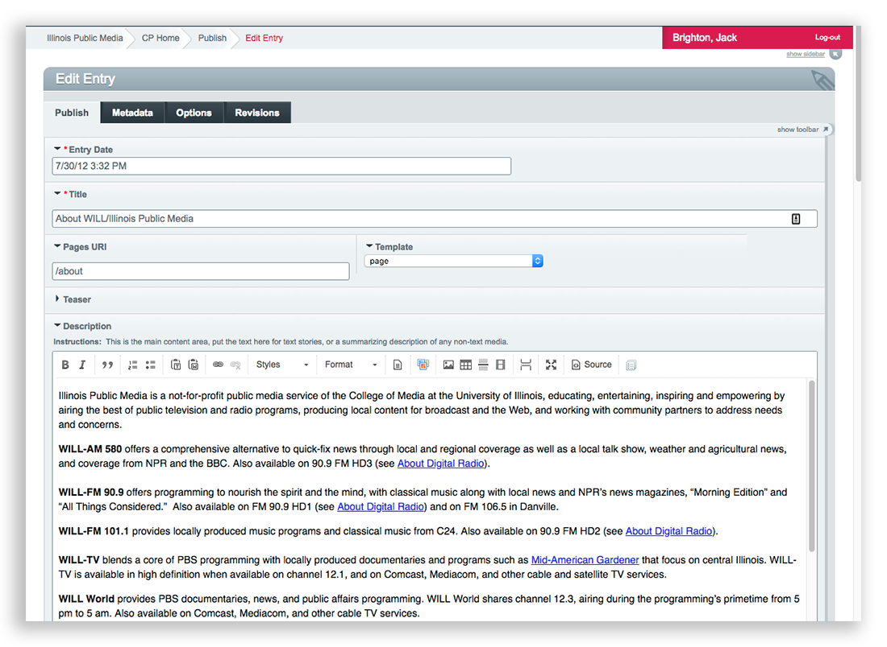
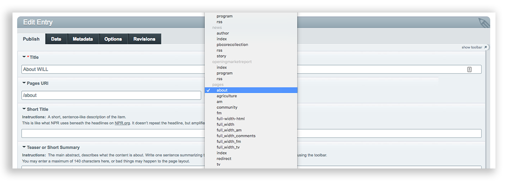
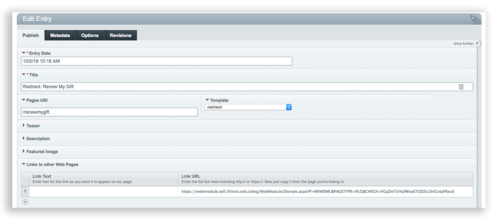

WILL Website Manual for Content Authors
How to Publish Web Content: How to Publish a single Page for special content

What is a Page?
A Page is used for static content, like the About WILL page. Pages aren't part of a series of posts displayed by date like on the News page. Use the WILL Pages section to create a singular stand-alone web page, like the About page.
How to create a Page
- Log into ExpressionEngine and go to create an entry like any other post.
- In the dropdown list of sections to post to, select WILL Pages.
The entry form for WILL Pages is almost the same as for any other post, with one exception. Near the top of the entry form you'll see a Pages URI field and a Template dropdown list:
In the Pages URI field, you can assign a custom url to the page you're creating. Enter only the part of the url after _will.illinois.edu_. In the case of the About page, we want to final url to be will.illinois.edu/about, so we just need to enter /about in the Pages URI field.
You can make the Pages URI as simple or complex as needed. For example let's say you want a page for WILL's history, and you want it associated with "About WILL." When you create the history page, just give it a Pages URI of /about/history. You can do the same thing with /about/location, /about/mission, etc. This creates a heirarchy of pages that makes sense to both humans and search engines.
You can use any uri you want, so long as it's unique. If you pick one that already exists, ExpressionEngine will complain and not let you do it.
Now select a template for the page
The template is the "shell" that will go around the page content, like the navigation, and logo (AM, FM, TV, Community, Agriculture, etc.). Some templates have sidebars, and some are full-width. You can tell what kind of template it is by the name of the template. Click the dropdown and scroll down to choose the template you want for the page:
If you choose a template and it isn't what you want, you can easily edit the WILL Page entry and select another template.
Special purpose templates
The Template dropdown list provides two very special purpose templates you can use as needed:
full_width_html
This pages/full-width template is a kind of shell with only the WILL top navigation and the footer. For the page content you can design anything you want just using the main Description field.
For example, let's say you want to design a page with a unique set of columns, and you're comfortable coding the columns yourself using html and the Bootstrap grid framework which we use for the website. Select the pages/full_width_html template, switch the Description field to Source view, and you can add just about any code you want including custom styles. Here's an example entry using the full_width_html template:

Here's the page for this entry: https://will.illinois.edu/greatamericanread. As you can see it has some custom styles, including a 2x2 grid for the videos. The custom CSS and the Bootstrap markup were added in the entry itself.
Redirects
The pages/redirect template has one purpose: redirecting the Pages URI to another url. This is useful in cases where a simple WILL url is needed, like will.illinois.edu/renewmygift, and you want it redirected to another url for a donation form or whatever.
To use the pages/redirect template do this:
- Create a new entry in the WILL Pages channel
- Title it anything you want. The title won't display anywhere, so use it to describe the redirect, e.g. "Redirect: Renew My Gift".
- In the Pages URI field, enter the uri segment you want redirected to the target url.
- In the Template dropdown, select the pages/redirect template.
- Scroll down to the Links to other Web Pages field, and enter the target url in the Link URL part of the field.
- Save the entry and you're done. No other fields are needed for redirects.
Here's an example entry showing the fields needed to create a redirect. Unneeded fields are collapsed in this screenshot just to get them out of the way:
